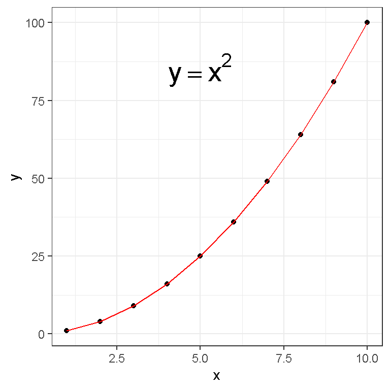

R’s sapply() Function With Examples
Hi there. This page is about R’s sapply function. The sapply function is a neat function where values in a dataframe column can be used as inputs for functions inside sapply. This concept will make more sense with the examples below.
Examples Of sapply()
Example One
In the first example, I create a table of values for a simple quadratic function \(y = x^2\). The x-values are natural numbers from 1 to 10 and is in a dataframe.
#### Example One:
# Create dataframe:
df <- data.frame(x = 1:10)
A R function for the \(y = x^2\) quadratic equation is made which will be used for sapply() later.
# Function for x^2:
x_squared <- function(x){
return(x^2)
}
Once the function is created, this function can be used in the sapply function. I apply this function to the x column such that the x-values are inputs in the x_squared function.
# Change second column from xvalues to its squared values with sapply:
df$y <- sapply(df$x, x_squared)
# View dataframe:
df## x y
## 1 1 1
## 2 2 4
## 3 3 9
## 4 4 16
## 5 5 25
## 6 6 36
## 7 7 49
## 8 8 64
## 9 9 81
## 10 10 100
A natural extension is to use R’s ggplot2 package to generate a plot and function sketch.
# ggplot Plot:
library(ggplot2)
ggplot(data = df, aes(x = x, y = y)) +
geom_point() +
geom_line(col = "red") +
annotate("text", x = 5, y = 85, parse = TRUE, size = 7, fontface ="bold",
label= "y == x^2") +
theme_bw()
Example Two (Anonymous Function)
In the sapply() function, you can create a function as an argument instead of defining a function outside of sapply(). Refer to the example below where the function is the square root of x (\(y = \sqrt(x)\)).
#### Example Two (Anonymous Function):
df2 <- data.frame(x = 1:20)
# Change second column to its square root values with sapply and an anonymous function:
df2$y <- sapply(df2$x, function(x){sqrt(x)})
df2## x y
## 1 1 1.000000
## 2 2 1.414214
## 3 3 1.732051
## 4 4 2.000000
## 5 5 2.236068
## 6 6 2.449490
## 7 7 2.645751
## 8 8 2.828427
## 9 9 3.000000
## 10 10 3.162278
## 11 11 3.316625
## 12 12 3.464102
## 13 13 3.605551
## 14 14 3.741657
## 15 15 3.872983
## 16 16 4.000000
## 17 17 4.123106
## 18 18 4.242641
## 19 19 4.358899
## 20 20 4.472136
Like in the first example, you can use ggplot2 for plotting.
# ggplot Plot:
ggplot(data = df2, aes(x = x, y = y)) +
geom_point() +
geom_line(col = "red") +
annotate("text", x = 15, y = 2, parse = TRUE, size = 7, fontface ="bold",
label= "y == sqrt(x)") +
theme_bw()
Example Three
R’s sapply() does not necessarily have to be used for math. This example looks an numeric grades and gives a pass/fail outcome with the passFail function and sapply().
(The passing grade here is 60 instead of the regular 50.)
#### Example Three:
grades <- c(62, 87, 39, 57, 80, 82, 77, 72, 70, 69, 64, 70, 59, 61)
grades_df <- data.frame(Grades = grades)
# Pass is 60 instead of regular 50.
passFail <- function(num_grade){
if(num_grade < 60){
return("Fail")
} else{
return("Pass")
}
}
# Using sapply to determine letter grade from number grade
grades_df$status <- sapply(grades_df$Grades, passFail)
grades_df## Grades status
## 1 62 Pass
## 2 87 Pass
## 3 39 Fail
## 4 57 Fail
## 5 80 Pass
## 6 82 Pass
## 7 77 Pass
## 8 72 Pass
## 9 70 Pass
## 10 69 Pass
## 11 64 Pass
## 12 70 Pass
## 13 59 Fail
## 14 61 Pass
Example Four
This example features assigning a weight condition given a BMI score. I have created a (fake and random) list of BMI numbers in R.
I have used this website as a reference for BMI categories.
#### Example Four (BMIs):
# Reference: https://www.nhlbi.nih.gov/health/educational/lose_wt/BMI/bmicalc.htm?source=quickfitnesssolutions
bmis <- c(17, 21.4, 18.2, 28.1, 30.6, 32.1, 22.3, 21, 23.2, 25.7, 31.7, 19.9, 26.2, 27.8)
bmis_df <- data.frame(Body_Mass_Index = bmis)
To assign weight conditions given numeric bmis, an if-elseif-else format is needed in the function for sapply().
# Assign BMI number to status condition with a function
bmi_status <- function(bmi){
if(bmi < 18.5){
return("Underweight")
} else if (bmi >= 18.5 & bmi <= 24.9){
return("Normal Weight")
} else if (bmi >= 18.5 & bmi <= 24.9){
return("Normal Weight")
} else if (bmi >= 25 & bmi <= 29.9){
return("Overweight")
} else {
return("Obese")
}
}
# Using sapply to determine weight status given a BMI score in bmi column.
bmis_df$Status <- sapply(bmis_df$Body_Mass_Index, bmi_status)
# View/Check
bmis_df## Body_Mass_Index Status
## 1 17.0 Underweight
## 2 21.4 Normal Weight
## 3 18.2 Underweight
## 4 28.1 Overweight
## 5 30.6 Obese
## 6 32.1 Obese
## 7 22.3 Normal Weight
## 8 21.0 Normal Weight
## 9 23.2 Normal Weight
## 10 25.7 Overweight
## 11 31.7 Obese
## 12 19.9 Normal Weight
## 13 26.2 Overweight
## 14 27.8 Overweight